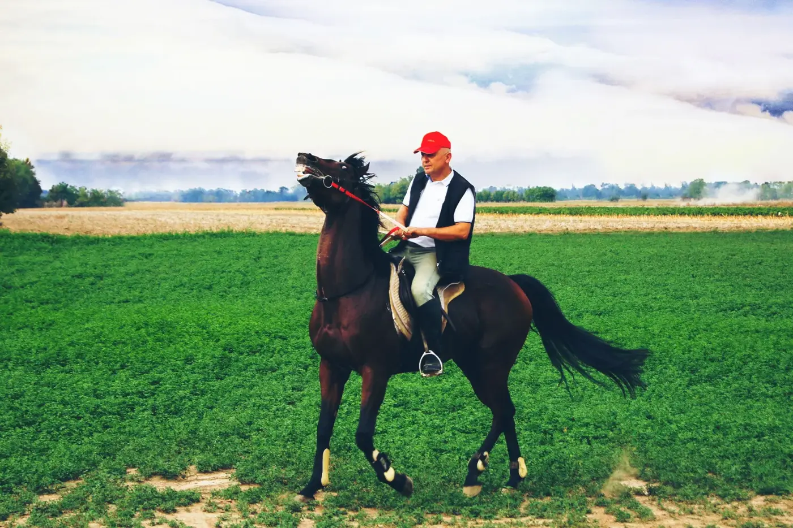
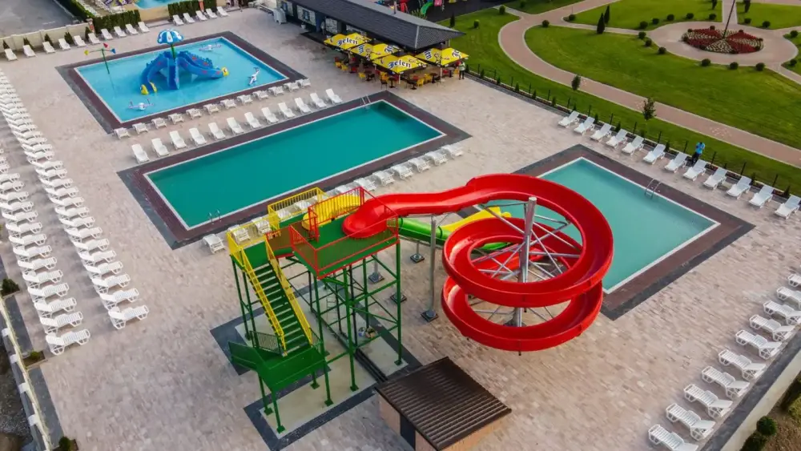
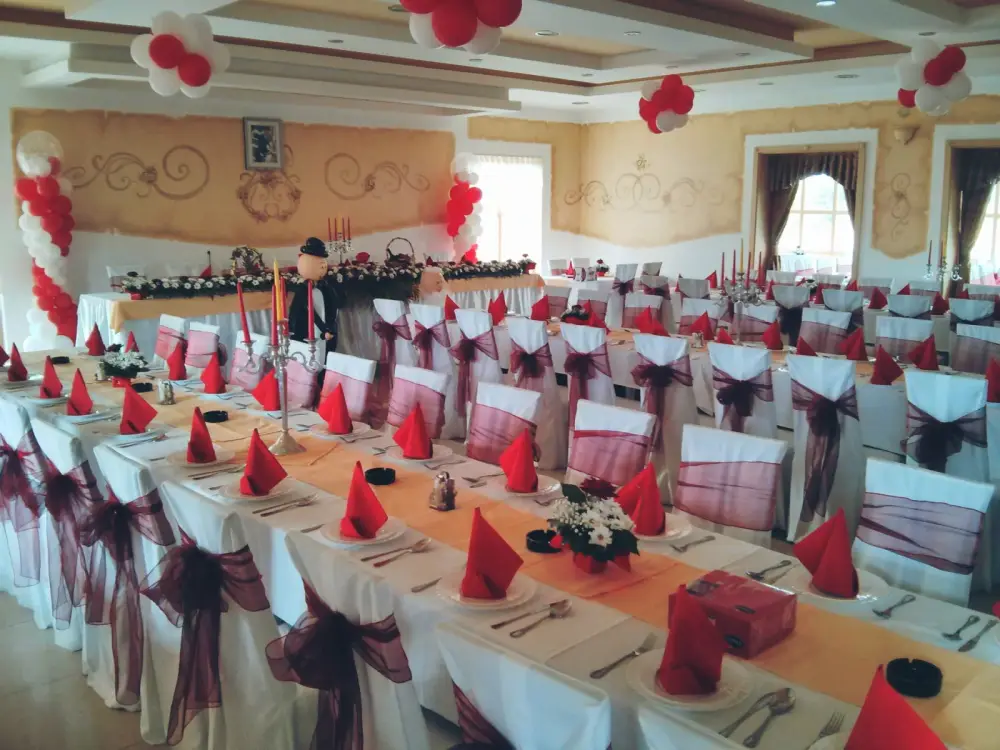
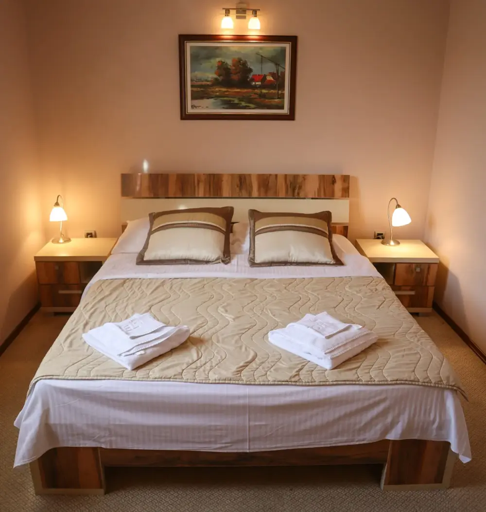

Semberski Salas — Spoj modernog i tradicionalnog
Ugostiteljski kompleks u srcu Semberije. Restoran sa domaćom kuhinjom, elegantna banket sala, udoban smještaj, aqua park i ergela konja — sve na jednom mjestu.
Dobrodošli u Semberski Salas
Semberski Salas je jedinstven ugostiteljski kompleks koji spaja tradicionalne semberske vrijednosti sa modernim komforom. Smješten na Pavlovića putu u Dvorovima kod Bijeljine, naš kompleks pruža nezaboravno iskustvo — od domaće kuhinje i elegantnih proslava do opuštanja uz bazene i jahanje konja. Već više od 30 godina, kompanija INTERGAJ ulaže u kvalitet i gostoprimstvo ovog kraja.
Izdvojeni sadržaji iz ponude
Od gastronomskih užitaka do aktivnog odmora — pronađite sve što vam je potrebno za savršen boravak.
Škola jahanja
Profesionalni treneri i obučeni konji za početnike i iskusne jahače svih uzrasta.
Aqua park
Bazeni za odrasle i djecu sa čistom vodom i uređenim prostorom za sunčanje.
Igralište za djecu
Opremljeno dječije igralište na otvorenom sa tobogenom, ljuljačkama i trampolinom.
Pansion za konje
Profesionalan smještaj za konje u modernoj štali sa svakodnevnom njegom i ishranom.
Vožnja fijakerom
Romantična vožnja fijakerom kroz imanje — idealno za proslave i posebne prilike.
Degustacija vina
Uživajte u odabranim domaćim vinima i rakijama iz Majevice uz stručno vođenu degustaciju.
Dječija igraonica
Zatvoreni prostor za igru opremljen savremenim sadržajima za najmlađe goste.
Prostor za sastanke
Opremljena sala za poslovne sastanke, prezentacije i seminare sa tehničkom podrškom.
Garaže za vozila
Zatvorene garaže za sigurno parkiranje vozila naših smještajnih gostiju.

Tradicija uzgoja konja
Ergela INTERGAJ je ponosni dom više od 30 konja raznih pasmina. Naša tradicija uzgoja i obuke konja seže više od tri decenije, a danas nudimo profesionalnu školu jahanja za sve uzraste.
Bilo da ste početnik ili iskusan jahač, naši treneri će vam prilagoditi program. Za posebne prilike nudimo romantičnu vožnju fijakerom kroz prelijepo imanje.
Zakažite čas jahanja
Aqua park za cijelu porodicu
Naš aqua park nudi savršen bijeg od ljetnih vrućina. Veliki bazen za odrasle i poseban dječiji bazen sa toboganom garantuju uživanje za cijelu porodicu.
Uređen prostor za sunčanje sa ležaljkama i suncobranima, bar sa osvježavajućim pićima i dostupnost hrane iz restorana čine naš aqua park idealnim za cjelodnevni odmor.
Saznajte više
Kod nas se dobro jede
Naš restoran sa kapacitetom od 120 mjesta u zatvorenom prostoru i terasom za 200 gostiju nudi bogat meni domaće kuhinje. Od hladnih predjela i čorbi, preko roštilja i jela ispod sača, do svježe pastrmke i morskih plodova.
Ponosni smo na naše domaće rakije sa Majevice — kruška, kajsija, šljiva i dunja — koje savršeno upotpunjuju svako jelo.
Pogledajte meni
Elegantna sala za veselja
Naša banket sala prima do 300 gostiju i pruža savršen ambijent za svadbe, rođendane, jubileje i poslovne događaje. Kompletna organizacija — od neograničene hrane i pića do muzike, foto studija i vatrometa.
Pogledajte ponudu
Udobne i prostrane sobe
Od jednokrevetnih soba do luksuznih apartmana sa đakuzijem — naš smještaj pruža komfor za svačiji ukus i budžet. Sve sobe uključuju doručak, besplatan parking i pristup svim sadržajima kompleksa.
Cijene od 47,50 KM za jednokrevetnu sobu do 152,50 KM za De Lux apartman sa đakuzijem.
Pogledajte sobeGosti nas preporučuju
Atmosfera je fenomenalna, osoblje ljubazno i profesionalno. Hrana je bila izvanredna — posebno preporučujem jela ispod sača. Definitivno ćemo se vratiti!
Organizovali smo svadbu u banket sali i sve je bilo savršeno. Od dekoracije do hrane, svaki detalj je bio na mjestu. Hvala ekipi Semberskog Salasa!
Djeca su oduševljena aqua parkom i konjima. Proveli smo cijeli vikend i nismo htjeli otići. Apartmani su čisti i udobni. Preporučujem svima!
Često postavljana pitanja
Rezervišite vaš boravak
Bilo da planirate proslavu, poslovni sastanak ili porodični odmor — javite nam se i zajedno ćemo kreirati savršen doživljaj.
Kontaktirajte nas